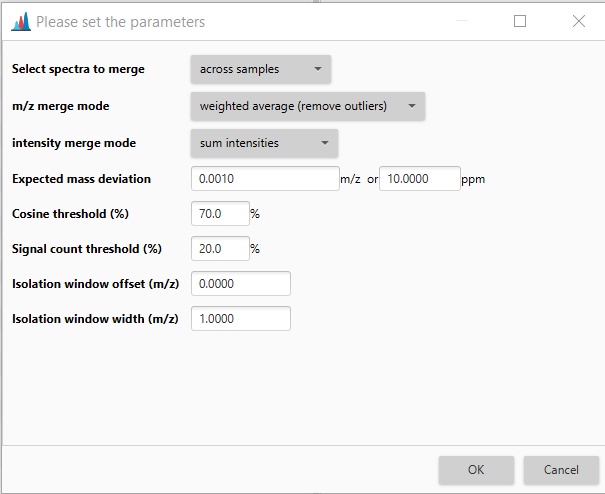

Merge MS/MS (experimental)¶
This option is available in the GNPS FBMN export and the SIRIUS export. If checked, high quality MS/MS spectra that correspond to one feature are merged, instead of exporting only the most intense MS/MS spectrum.
Parameters¶

Select spectra to merge¶
The users can select to merge the MS/MS spectra:
- Across samples, which will merge all MS/MS spectra that belong to the same feature, and as such is the most convenient option.
- Same sample, which will merge MS/MS spectra for the same feature within one sample, and can be used if the user is not confident about the alignment algorithm.
- Consecutive scans, which will merge MS/MS spectra if they are triggered in a row.
m/z merge mode¶
This option allows you to select the way to merge the fragments' m/z values associated with a similar precursor value. "Most intense" will always pick the m/z of the best feature, which is a very safe and conservative option. However, "weighted average (remove outliers)" will often yield better result.
Intensity merge mode¶
Options on how to merge the intensity values of features from different spectra with similar mass.
- Sum intensities is a convenient option that will increase the intensities of feature that occur consistently in many fragment scans. However, this will make intensities between merged and unmerged spectra incomparable.
- Use max intensity to preserve intensity values
Expected mass deviation¶
Expected mass deviation between different spectra of the same feature of your measurement in ppm (parts per million) or Da(larger value is used). We reccommend to use a rather large values, e.g. 10ppm for Orbitrap, 15 ppm for Q-ToF, 100 ppm for QQQ.
Cosine treshold¶
Treshold of cosine similarity between spectra that needs to be met in order for two spectra to be merged. In case they have different collision energies, cosine treshold should be set to 0, since different collision energies will result in different fragmentation pattern.
Signal count treshold¶
After merging the spectra, signals that occur in less than the user specified % of the merged spectra will be removed.
Isolation window offset (m/z)¶
Isolation window offset from the precursor m/z.
Isolation window width (m/z)¶
Width of the isolation window (left and right).